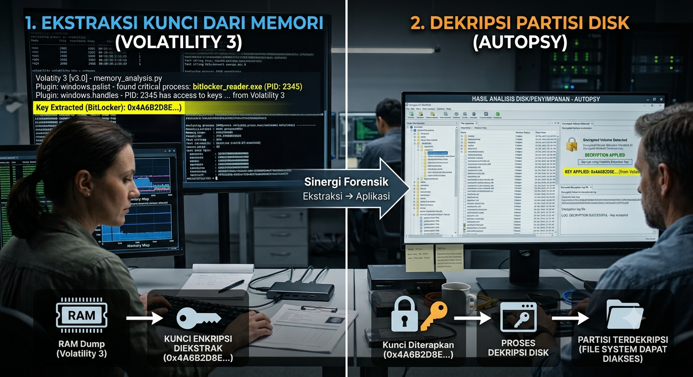

Analisis Komparatif Volatility 3 dan Autopsy dalam Rekonstruksi Artefak Volatile dan Dekripsi Penyimpanan Terenkripsi

I. Pendahuluan & Landasan Teoretis
1.1 Hierarki Volatilitas Data Berdasarkan RFC 3227
Dalam investigasi insiden keamanan siber, pemahaman terhadap Order of Volatility merupakan parameter kritikal yang menentukan keberhasilan retensi bukti digital. Merujuk pada standardisasi RFC 3227, data di dalam memori utama (RAM) memiliki tingkat volatilitas tertinggi. Data tersebut bersifat efemeral dan akan musnah secara permanen saat komponen catu daya terputus (power loss). RAM menyimpan representasi metrik dari status eksekusi sistem secara real-time, termasuk kunci enkripsi aktif, deskriptor soket jaringan, dan kernel-level artifacts yang tidak pernah menyentuh media penyimpanan persisten (disk).
| Prioritas Volatilitas | Kategori Data | Komponen / Representasi Artefak | Instrumen Utama Analisis |
|---|---|---|---|
| Tingkat 1 (Tertinggi) | Volatile Memory | Kunci enkripsi simetris, register, cache, Process Environment Block (PEB) | Volatility 3, Rekonstruktor Kernel |
| Tingkat 2 | Sub-Sistem Paging | Swap Space, Pagefile.sys (Ekspansi virtual memori) | Volatility 3 / Autopsy Parser |
| Tingkat 3 | Non-Volatile Storage | Struktur File Sistem, Windows Registry, Log Keamanan, Prefetch | Autopsy Forensic Browser |
| Tingkat 4 (Terendah) | Arsip Fisik Permanen | Media Cadangan (Backup), Volume Shadow Copies, Snapshot Storage | Autopsy, Sleuth Kit Engine |
1.2 Batasan Teknis Analisis Forensik Statis (Static Disk Forensics)
Pendekatan forensik tradisional menggunakan metode bit-stream imaging pada media penyimpanan non-volatile memiliki batasan metodologis yang signifikan. Instrumen seperti Autopsy bekerja dengan cara mengurai (parsing) struktur file sistem yang statis (seperti NTFS, ext4, atau APFS). Mekanisme ini tidak adaptif terhadap taktik penyerangan siber modern, seperti fileless malware yang mengeksploitasi teknik process hollowing atau reflective DLL injection. Selain itu, jika mekanisme pengamanan target memanfaatkan enkripsi penuh (Full Disk Encryption - FDE) tingkat lanjut seperti BitLocker dengan algoritma XTS-AES atau LUKS2, analisis offline pada Autopsy akan mengalami jalan buntu (deadlock) kecuali kunci pemulihan disediakan oleh otoritas terkait.
II. Metodologi Komparasi Fitur Teknis
Evaluasi komparatif dilakukan secara objektif untuk memetakan kapabilitas operasional dari kedua instrumen forensik berdasarkan beberapa dimensi parameter pertimbangan teknis:
| Kriteria Evaluasi | Autopsy Forensic Browser (Static Framework) | Volatility 3 Framework (Dynamic Memory Engine) |
|---|---|---|
| Keadaan Sistem Target | Pasif / Offline (Dead Forensics) | Aktif / Online (Live Forensics Context) |
| Mekanisme Ingesti Data | E01, RAW/DD, VMDK (Sektor berbasis Disk Image) | Physical Memory Dump (RAW, LiME format, Core Dump) |
| Dekapsulasi Enkripsi | Bergantung pada input kunci eksternal/Key Escrow | Mampu melakukan parsing struktur pool memori untuk mengekstrak master key |
| Deteksi Fileless Threat | Terbatas pada residu persistensi di Registry/MFT | Sangat komprehensif via analisis Virtual Address Descriptor (VAD) |
| Ketergantungan Struktur | Abstraksi File Sistem (MFT, Inode Table) | Symbolic Files (PDB metadata, Linux Banner Kernel Maps) |
| Integritas Lingkungan | Mutlak (0% modifikasi pada media storage) | Mengubah kondisi RAM sekian persen selama proses akuisisi |
III. Deep-Dive Metodologi Ekstraksi Artefak Kritis
3.1 Ekstraksi Kunci Kriptografi FDE (Full Disk Encryption)
Pada saat sistem operasi terenkripsi berjalan, kunci enkripsi volume utama (seperti Full Volume Encryption Key - FVEK pada BitLocker) didekripsikan ke dalam volatile memory agar subsistem kernel dapat melakukan operasi I/O secara transparan. Autopsy tidak memiliki kapabilitas mengekstrak kunci ini dari disk image terenkripsi yang pasif.
Melalui Volatility 3, investigator dapat mengekstrak teks sandi kriptografi dari dump memori fisik menggunakan subsistem pemrosesan simbolik Windows. Perintah eksekusi formal pada lingkungan Linux didefinisikan sebagai berikut:
# Memetakan informasi kernel dan konfigurasi build sistem target python3 vol -f /path/to/evidence_mem.dump windows.info # Mengekstrak materi kunci BitLocker (FVEK) dari struktur pool memori python3 vol -f /path/to/evidence_mem.dump windows.bitlocker.BitLocker
3.2 Analisis Struktur Proses dan Deteksi Malicious Code Injection
Malware modern kerap menyuntikkan kode berbahaya ke dalam ruang alamat memori proses legal (misalnya svchost.exe atau explorer.exe). Autopsy tidak mampu mendeteksi anomali runtime ini karena tidak ada representasi file fisik pada disk. Volatility 3 melakukan pemindaian terhadap struktur internal kernel, mendeteksi halaman memori yang dikonfigurasi dengan proteksi PAGE_EXECUTE_READWRITE (W^X violation), serta mengurai pohon proses (process tree) menggunakan struktur data _EPROCESS.
# Mengidentifikasi ketidaksesuaian struktur VAD dan injeksi kode tak terdokumentasi python3 vol -f /path/to/evidence_mem.dump windows.malfind # Melakukan rekonstruksi hierarki proses untuk mendeteksi pemecahan proses (process spawning anomali) python3 vol -f /path/to/evidence_mem.dump windows.pstree
3.3 Rekonstruksi Soket dan Sesi Jaringan Aktif
Guna mengidentifikasi indikator kompromi (IoC) berupa koneksi Command and Control (C2), analisis terhadap network state yang sedang berjalan sangat krusial. Volatility 3 mengurai objek driver jaringan (seperti tcpip.sys) untuk menampilkan koneksi aktif beserta PID yang bertanggung jawab.
# Melakukan pemindaian terhadap endpoint koneksi TCP/UDP yang aktif saat dumping python3 vol -f /path/to/evidence_mem.dump windows.netscan
IV. Perumusan Standar Hybrid Forensic Workflow
Berdasarkan kelemahan eksperimental dari masing-masing instrumen, akurasi investigasi digital forensik yang optimal hanya dapat dicapai melalui penggabungan kedua metode dalam sebuah Hybrid Forensic Workflow yang selaras dengan ISO/IEC 27037.
"Pendekatan sekuensial yang memprioritaskan akuisisi volatile data sebelum melakukan tindakan interupsi daya pada hardware merupakan prasyarat mutlak dalam menjaga validitas bukti digital secara komprehensif."
Alur kerja hibrida diimplementasikan melalui tahapan terstruktur berikut:
- Fase 1: Live Acquisition — Melakukan dumping memori menggunakan instrumen dengan footprint minimal (misal: LiME untuk Linux atau WinPmem untuk Windows) guna mengamankan RAM state.
- Fase 2: Volatile Analysis — Mengeksekusi Volatility 3 untuk memburu cryptographic keys (BitLocker/LUKS) dan mengidentifikasi keberadaan malware residensial memori.
- Fase 3: Safe Transition — Mematikan sistem secara teratur atau melakukan pencabutan daya (tergantung pada kebijakan deteksi anti-forensik) dilanjutkan dengan write-blocked static disk imaging.
- Fase 4: Persistent Analysis — Menginjeksikan kunci dekripsi yang diperoleh dari Fase 2 ke dalam Autopsy untuk membuka partisi FDE, dilanjutkan dengan pengindeksan linimasa (timeline analysis) dan ekstraksi artefak persisten.
V. Validasi Integritas & Rantai Jaga (Chain of Custody)
Sesuai dengan ketentuan regulasi hukum penanganan bukti elektronik di Indonesia, salah satunya UU ITE No. 11 Tahun 2008 Pasal 5 serta panduan teknis Perkapolri No. 10 Tahun 2019, setiap tahapan transformasi digital wajib divalidasi menggunakan fungsi hash kriptografis guna menjamin aspek data integrity.
# Eksekusi kalkulasi hash SHA-256 untuk pemeliharaan Rantai Jaga (Chain of Custody) sha256sum /storage/forensics/evidence_mem.dump > memory_integrity.sha256 sha256sum /storage/forensics/evidence_disk.img > disk_integrity.sha256
VI. Kesimpulan
Volatility 3 dan Autopsy tidak berada dalam paradigma kompetitif, melainkan merupakan dua instrumen komplementer dalam ekosistem Digital Forensics and Incident Response (DFIR). Analisis forensik statis melalui Autopsy memberikan ketahanan bukti empiris untuk data yang bersifat persisten, namun tidak berdaya dalam menghadapi FDE moderen dan eksploitasi fileless. Integrasi keduanya dalam Hybrid Forensic Workflow menjamin efisiensi analisis, akurasi temuan hambatan enkripsi, serta kepatuhan penuh terhadap standar regulasi penegakan hukum digital.
Referensi & Pustaka Akademik
- [1] Carrier, B. (2005). File System Forensic Analysis. Addison-Wesley Professional.
- [2] Ligh, M. H., Case, A., Levy, J., & Walters, A. (2014). The Art of Memory Forensics: Detecting Malware and Threats. John Wiley & Sons.
- [3] ISO/IEC Standard No. 27037:2012. Guidelines for identification, collection, acquisition, and preservation of digital evidence.
- [4] Internet Engineering Task Force. (2002). Guidelines for Evidence Collection and Archiving (RFC 3227).